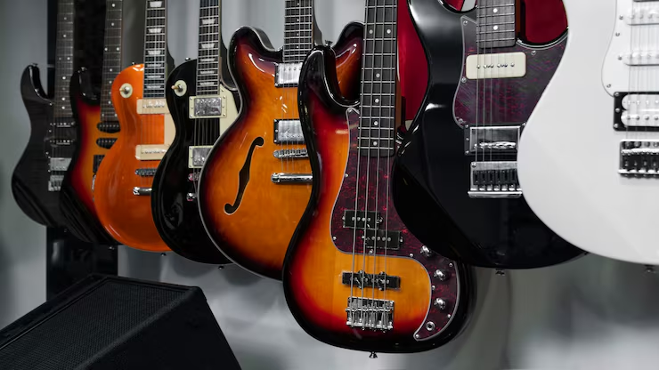

Viña del Mar · Región de Valparaíso
Sonido Vivo
Instrumentos y equipos para darle forma a tu música.
Tienda especializada en instrumentos musicales, equipos de sonido y accesorios, con 11 años acompañando a músicos desde Viña del Mar.
Explorar destacadosUna muestra del catálogo
Productos destacados
Conoce algunos de los instrumentos y equipos disponibles en Sonido Vivo.
Nuestra tienda
Música, sonido y experiencia local
Sonido Vivo es una tienda especializada en instrumentos musicales, equipos de sonido y accesorios, ubicada en Viña del Mar.
Nuestro catálogo incluye guitarras, bajos, baterías, teclados, amplificadores, micrófonos, pedales de efectos y distintos accesorios para músicos.
Además de nuestra oferta de productos, realizamos reparación de instrumentos de cuerda.
- 11
- años de funcionamiento
- 340
- referencias en el catálogo completo
- 10
- categorías principales
Cultura musical
Practicar también es parte del sonido
Conoce algunos de los errores más comunes al practicar guitarra y cómo mejorar tu forma de estudiar el instrumento.
Video de Brandon Acker en YouTube.